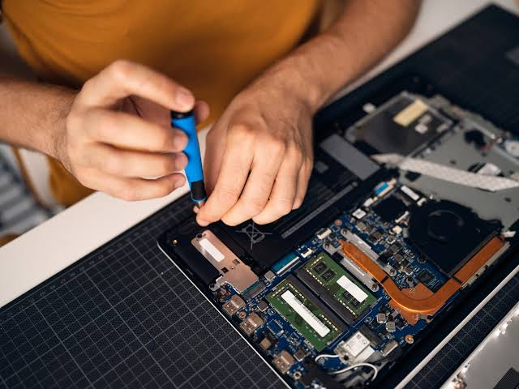
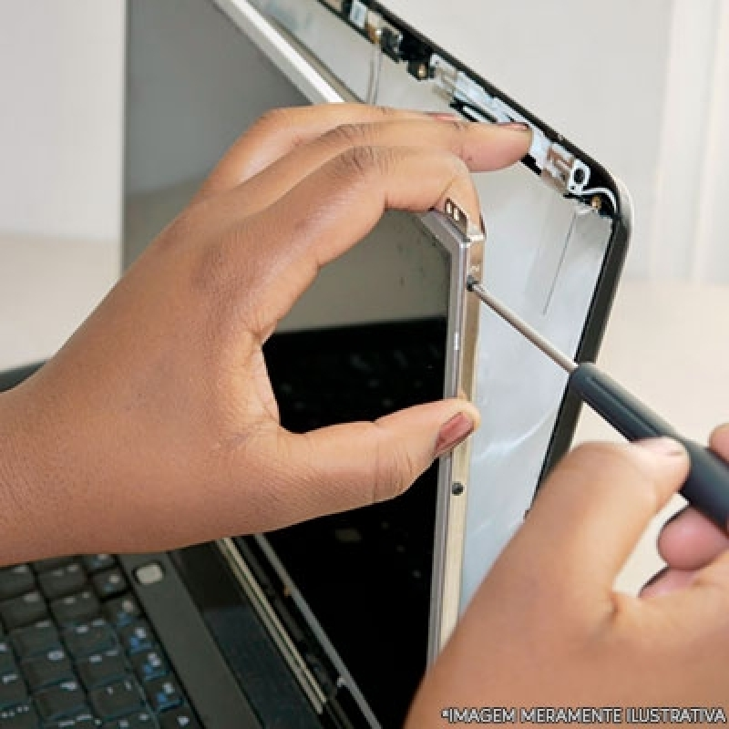
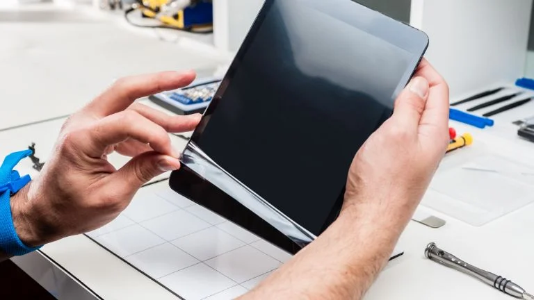

Troca de Tela
Aprenda a trocar telas de celulares.
Manutenção de Tablets
Conserte tablets de várias marcas.
Troca de Bateria
Aprenda a substituir baterias.

Manutenção de Notebooks
Faça manutenção preventiva e corretiva.

Assistência Técnica para Notebooks
Obtenha orientações sobre como realizar assistência técnica em notebooks.

Reparo de Tablets
Aprenda a diagnosticar falhas, substituir componentes e realizar reparos em tablets de diferentes marcas e modelos.